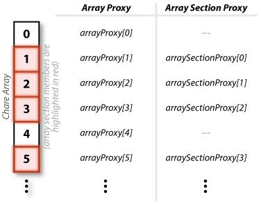

Sometimes only certain elements of a chare array need to have messages sent to them (i.e. their entry methods invoked). Furthermore, sometimes the same subset of chares in the chare array may need to have this occur many times throughout the course of the application execution. Array sections are a way of specifying a arbitrary subset of elements in a chare array. Once the array section has been defined, it can be used to multicast a message to the members of the chare array subset.
The first way of creating array sections is to specify a triplet of numbers to the constructor of the array section proxy's constructor. The triplet contains three values: the starting index, the ending index, and a stride. One triplet can be given for each dimension of the array. For example, consider a 1D chare array. To create array sections, one containing all of the even numbered indexes (including index 0) and one containing all the odd numbered indexes, the following code could be used.
// Create a chare array
|
| Figure 1: Code to create even and odd array sections for a 1D chare array |
While the triplet method is a quick and easy way of quickly defining large subsets of chare array elements, the subsets need to be regular. This is not always sufficient to identify useful subsets. Another method of defining a subset of elements is to create a vector of indexes and then create the array section using the vector of indexes. For example, the following code will also create an array section containing all of the odd index elements in the chare array, however, it will do it by creating a vector with all the odd indexes.
// Create a chare array
|
| Figure 2: Code to create an odd array section for a 1D chare array using a vector of indexes |
|  |
| Figure 3: Indexing scheme for array proxies and array section proxies |
The individual elements in the array section can be index individually. Starting with index zero, each member of the subset of elements (i.e. the array section members) can be individually indexed according to the scheme presented in Figure 3.
For more information on callbacks, please see Section 3.8.13: Array Section of the The Charm++ Programming Language Manual
{kind=link}